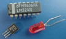

Module 1: Research
 Read Chapter 1 in textbook.
Read Chapter 1 in textbook.
How do digital devices represent words and letters? In Chapter 1, we read about ASCII codes. Look at the graphics on this web site and think about ways that codes represent images, sounds, video, and text information and how the codes are transmitted.


 Assignment #2: Define Computer Literacy
Assignment #2: Define Computer Literacy
What is one thing new you learned (‘aha’ moment) that you hadn’t thought about before? How can you use your new knowledge? Be sure to cite your sources. Reply to at least 2 others on the forum. Reminder: All posts should be appropriate for public viewing. Be sure and provide feedback to others who post. Find 1 thing you liked and 1 thing you feel they could improve on. Be professional and remember that words may be taken wrong, if you’re not careful on how you say things.